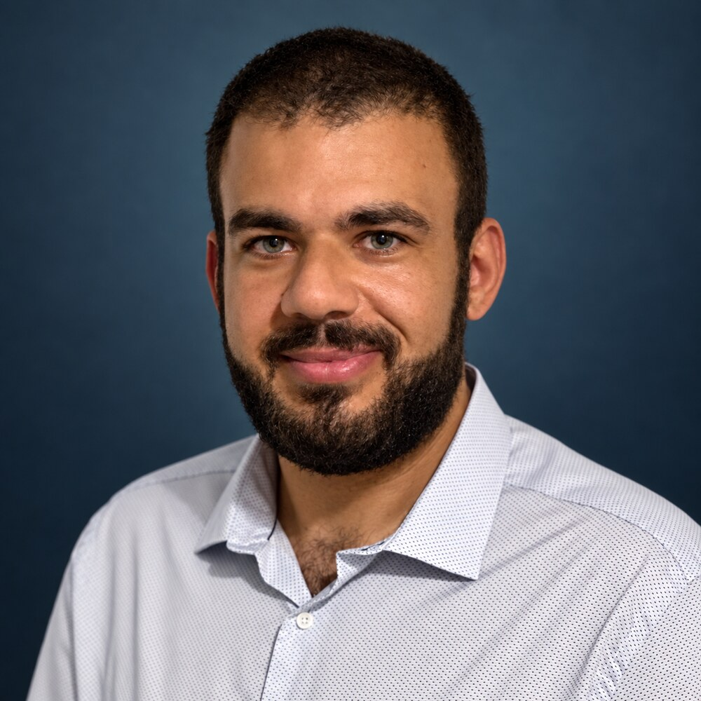

IA · Data · R&D
À propos de Noetria
Noetria est une société de conseil et d'expertise en intelligence artificielle, Data et R&D, créée en 2026 par Frédérick Bisone. Sa raison d'être : des projets technologiques qui produisent un résultat métier.
Le fondateur : Frédérick Bisone

Docteur en informatique (Université de Tours, 2021) et titulaire d'un master en systèmes d'information pour l'aide à la décision, Frédérick Bisone compte plus de 10 ans d'expérience en informatique et systèmes d'information, dont plus de 7 ans consacrés à la Data, à l'IA et à la R&D.
Son parcours associe :
- la recherche, académique et appliquée en entreprise ;
- l'enseignement supérieur ;
- la direction d'un laboratoire R&D au sein d'un cabinet de conseil ;
- la conception de solutions Data & IA au service de problématiques métier.
Travaux de recherche
Sa thèse, soutenue en 2021 à l'Université de Tours au sein du LIFAT (Laboratoire d'Informatique Fondamentale et Appliquée de Tours), part d'un constat : les positions GPS seules ne suffisent pas à comprendre ce que fait un véhicule. Elles sont imprécises, le signal se perd, et surtout l'activité réelle est bien plus riche qu'un tracé sur une carte. Or les véhicules embarquent de plus en plus de capteurs : moteur, portes, frein à main, gyrophares, sirènes…
Il y propose un processus généralisable qui transforme ces données brutes, après analyse de leur qualité, en trajectoires « sémantiques » : chaque déplacement et chaque arrêt est qualifié par ce qu'il signifie pour le métier. Par exemple, une ambulance qui roule en urgence pour transporter un patient vers l'hôpital, une autre qui roule normalement pour aller faire le plein, ou un arrêt pour prendre en charge une victime sur place.
Ce processus a été mis en œuvre sur les ambulances connectées des sapeurs-pompiers d'Indre-et-Loire, à partir de règles expertes construites avec l'analyse de leur cycle de travail. Il ouvre la voie à de nouveaux usages : indicateurs de suivi d'activité, navigation adaptée au type de véhicule, maintenance anticipée de la flotte.
- Extraction de trajectoires sémantiques à partir de données multi-capteurs : application à des véhicules de secours. Thèse de doctorat en informatique, Université de Tours, 2021. HAL
- From Raw Sensor Data to Semantic Trajectories. F. Bisone, T. Devogele, L. Etienne. EM-GIS '19, 5th ACM SIGSPATIAL International Workshop on Emergency Management Using GIS, 2019. DOI · HAL
- Modélisation et extraction de la sémantique des trajectoires à partir de données multi-capteurs. F. Bisone, L. Étienne, T. Devogele. Revue Internationale de Géomatique, 28(4), 461-483, 2018.
- Extraction automatique de la sémantique des trajectoires. F. Bisone, L. Etienne, T. Devogele. Spatial Analysis and GEOmatics (SAGEO), 2017. HAL
Une démarche issue de la recherche
De la recherche, Noetria garde une méthode : poser le bon problème, vérifier ce qui est faisable, puis construire une solution utile, maîtrisée et mesurable.
Vous entrez là où vous en êtes : diagnostic, cadrage d'un cas d'usage, POC, industrialisation ou formation.
Où intervient Noetria
Basée à Blois, Noetria intervient partout en France, à distance et, selon les missions, sur site.
Premier échange · 30 minutes
De la recherche à l'impact métier.
Un premier échange permet de comprendre votre contexte et de déterminer la prochaine étape utile, sans engagement.
Choisir un créneauou écrire à contact@noetria.fr